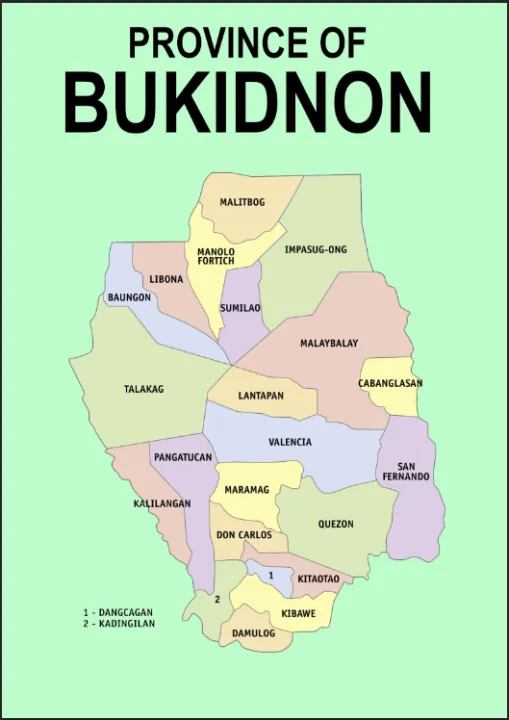
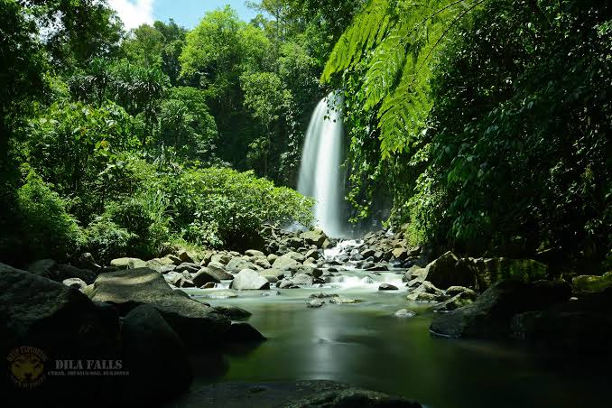
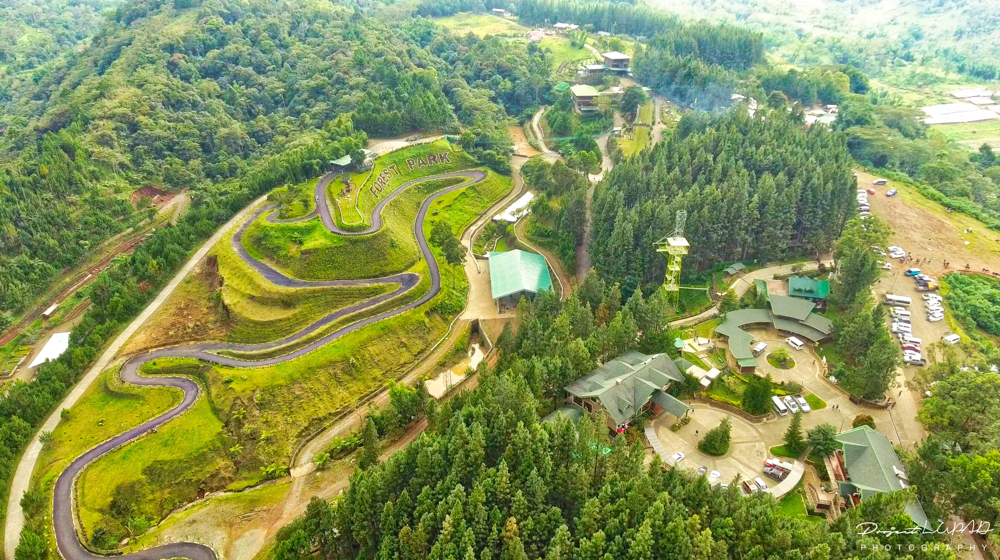
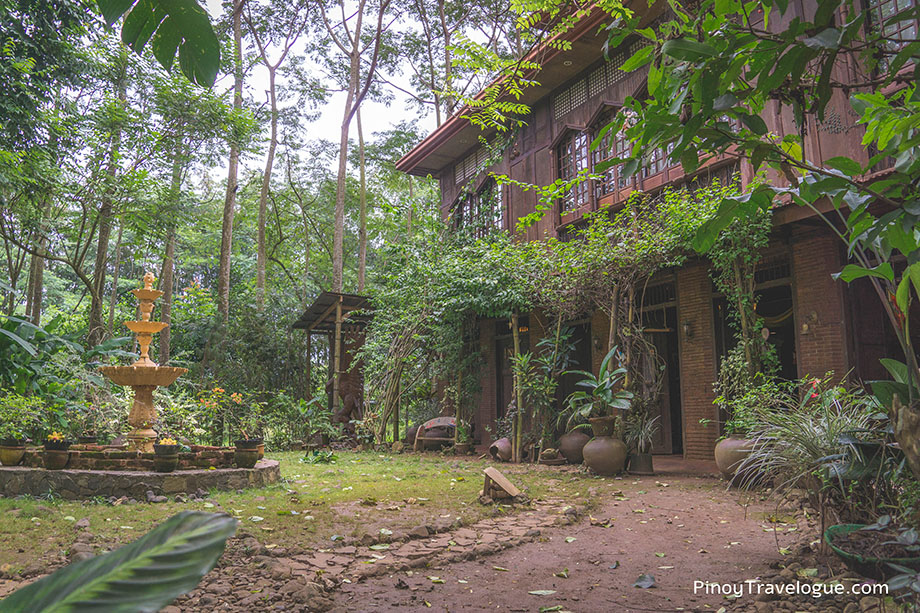

Impasug-ong
Communal Ranch
Enjoy rolling green hills, mountain views, and beautiful open grasslands.
Experience the breathtaking landscapes, beautiful waterfalls, exciting adventures, and rich culture of Bukidnon, Philippines.
EXPLORE NORTHERN MINDANAO
Bukidnon is a beautiful province in Northern Mindanao known for its cool climate, magnificent mountain ranges, green landscapes, waterfalls, lakes, and rich cultural heritage.
From the famous Communal Ranch to the peaceful waters of Lake Apo, every destination offers a unique experience for travelers, families, and adventure lovers.

PLACE TO EXPLORE
Explore the beautiful destinations that make Bukidnon a wonderful place to visit.
Enjoy rolling green hills, mountain views, and beautiful open grasslands.

Experience sunrise views and the famous sea of clouds.

A protected mountain range known for its rich biodiversity and high peaks.

One of the highest mountain peaks in the Philippines.

A scenic hiking and camping destination with beautiful highland views.

A remarkable mountain range with forests and challenging trails.

A mountain destination surrounded by forest landscapes.

Part of Bukidnon's beautiful mountain and forest landscapes.

Discover highland views and outdoor camping experiences.

A beautiful waterfall located along the Sayre Highway.

A spectacular two-tiered waterfall surrounded by natural scenery.

Explore forest trails, rivers, and refreshing waterfalls.

A freshwater nature destination for relaxation and swimming.

A natural cave attraction known for its underground water features.

A cave destination for visitors interested in natural exploration.

A natural waterfall in the CEDAR area.

A forest waterfall within the CEDAR eco-tourism area.

A remote waterfall destination for nature explorers.

A unique waterfall with water flowing across a rock wall.

A peaceful crater lake surrounded by beautiful green hills.

A scenic lake destination perfect for nature lovers.

A protected forest and recreation area for outdoor activities.

A peaceful highland getaway with cool air and mountain views.

A cultural park and festival venue celebrating Bukidnon heritage.

Also known as Musuan Peak, a notable volcanic landmark.

Enjoy ziplining, exciting rides, and outdoor adventures.

Enjoy outdoor activities and countryside experiences.

A peaceful monastery known for its unique pyramid-shaped architecture.

Discover artwork inspired by nature and Talaandig culture.

Learn about traditional weaving and community craftsmanship.

Celebrate the traditions and cultural heritage of Bukidnon's Indigenous peoples.

See the agricultural landscapes that make Bukidnon famous.

Enjoy a green public space in the provincial capital.
TASTE OF BUKIDNON
A delicious steamed corn delicacy wrapped in corn husks.
Enjoy Bukidnon's famous sweet and juicy pineapples.
Discover locally grown coffee from Bukidnon's highlands.